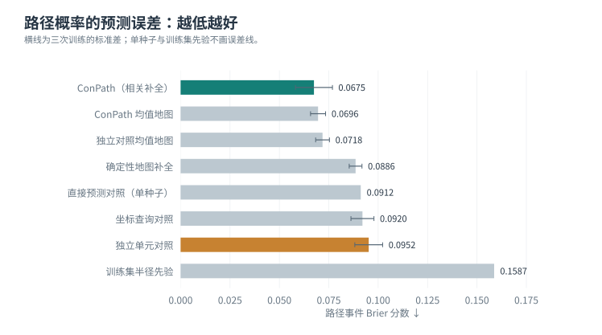

{kind=link}
{kind=link}
{kind=link}
{kind=link}
{kind=link}
{kind=link}
{kind=link}
{kind=link}
{kind=link}
FlatLands
它直接提供部分观测、完整俯视地面地图和有效范围，适合构造“这两个点之间，对指定尺寸的机器人是否有路”的标签。选它首先是因为与研究问题匹配。
当前使用场景隔离的自建来源划分，不是官方排行榜划分。本地输入是地图通道，没有声称复现原论文从单张 RGB 图像出发的完整系统。官方介绍 ↗
部分观测 · 地图不确定性 · 路径概率
机器人只看到了地图的一部分。我们让模型补全多种可能的世界，
再考虑机器人的尺寸，估计起点到目标之间存在通路的概率。
验证阶段 · 新消融训练已暂停 · 更新于 2026.09.07
01 / 方法
下面是已训练模型的真实验证示例。按 ① → ④ 阅读；每张图都可以放大。
概率图单独使用图内的 0–1 色条，颜色越深，单元格越可能可通行。S 和 G 只是查询的两个端点，图中没有把它们画成一条规划路线。
把可能的完整地图逐一检查后，模型给出“有路”的概率。中间的均值概率图描述每个位置，最终通路概率还取决于这些位置能否共同连通。
FlatLands / ZInD · obs_266762 · 机器人半径 10 格 · 模型种子 20260831。按验证标签挑选的解释性示例，不能用两个例子代替整体统计。
概率地图为每一个格子给出可通行概率，例如 70%。一次随机补全则把整张地图变成一个具体世界：每格要么可通行，要么阻挡。两张概率地图即使看起来接近，也可能产生连通性很不一样的完整世界。
为考虑机器人的大小，我们先从可通行区域边缘扣除一个圆盘半径，再用四邻接关系检查起点和目标是否连通。这里评估的是通路是否存在，尚未输出带车辆动力学约束的行驶轨迹。
02 / 数据
6 个室内地图示例、6 个户外场景，以及一段 18 帧的真实数据浏览。
新增图库均取自训练集，场景按来源和编号选取，没有按模型表现挑图。
左边是模型能够看到的部分，右边是用于核对的完整参考地图。这些是俯视栅格图，不是相机照片。
训练集 · 3RScan / c6707946-2ecb-2de2-8381-d5eae12243ee · obs_000468 · 每格 0.01 米。模型输入与完整参考严格区分。
这是一段 UnScenes3D 原始数据的逐帧浏览。照片是前视图，地图是俯视图；当前模型读取激光雷达生成的观测地图，参考地图用于监督和评估。
每秒切换一张采样帧，仅用于看数据，并非原始录像速度或模型实时运行速度。没有绘制查询直线或预测行驶路线。
03 / 结果
当前主要证据来自 FlatLands：142 个验证场景，每次训练评估相同的 4,224 个路径事件。
场景之间等权，正式测试集尚未评估。
ConPath 比独立单元对照低约 29.1%。
同模型的均值地图已很接近 ConPath。
配对区间包含零，尚无稳定风险优势。

| 方法 / 对照 | 种子数 | Brier ↓ | NLL ↓ | ECE ↓ | 30% 覆盖率误判 ↓ |
|---|---|---|---|---|---|
| ConPath（相关补全） | 3 | 0.06749 ± 0.00936 | 0.28854 ± 0.01662 | 0.05715 ± 0.00683 | 3.60% |
| 独立单元对照 | 3 | 0.09521 ± 0.00703 | 0.78503 ± 0.04690 | 0.08720 ± 0.00741 | 3.90% |
| 确定性地图补全 | 3 | 0.08857 ± 0.00323 | 1.22362 ± 0.04463 | 0.08857 ± 0.00323 | 7.29% |
| 坐标查询对照 | 3 | 0.09204 ± 0.00582 | 0.33411 ± 0.01859 | 0.04302 ± 0.00803 | 6.97% |
| 直接预测对照（单种子） | 1 | 0.09119 | 0.29788 | 0.04076 | 5.02% |
| 训练集半径先验 | 1 | 0.15870 | 0.49283 | 0.01661 | 11.16% |
| ConPath 均值地图 | 3 | 0.06957 ± 0.00380 | 0.96118 ± 0.05253 | 0.06957 ± 0.00380 | 10.51% |
| 独立对照均值地图 | 3 | 0.07184 ± 0.00349 | 0.99248 ± 0.04822 | 0.07184 ± 0.00349 | 11.02% |
| 打散空间结构（评估干预） | 3 | 0.16139 ± 0.00677 | 1.53947 ± 0.18205 | 0.16433 ± 0.01252 | 3.91% |
Brier：概率的平方误差。NLL：对错误且过度自信的判断惩罚更重。ECE：模型信心与实际频率的分箱差异。误判通路：接受的查询里，实际上没有通路的比例。种子数代表独立训练次数；半径先验只由训练集拟合一次。
均值地图等二元预测会出现同分查询，覆盖率边界按不使用标签的比例方式分配。原始统计 JSON ↗ · 完整证据与复现说明 ↗
04 / 研究选择
它直接提供部分观测、完整俯视地面地图和有效范围，适合构造“这两个点之间，对指定尺寸的机器人是否有路”的标签。选它首先是因为与研究问题匹配。
当前使用场景隔离的自建来源划分，不是官方排行榜划分。本地输入是地图通道，没有声称复现原论文从单张 RGB 图像出发的完整系统。官方介绍 ↗
它提供真实车辆相机、激光雷达和三维占用标注，可检查从室内地图换到户外观测时，方法哪里会失效。标注可投影为保守的可通行地面图。
目前使用公开 mini 数据中的 9 个训练场景、2 个验证场景，测试地点 location_6 未使用。它与常见的 nuScenes 是两个不同数据集。数据论文 ↗
下面区分原论文使用的数据与我们实际做的对照。借鉴一种思路，不等于复现了原论文的方法与成绩。
| 原论文 | 原论文 / 官方实验数据 | 在本项目中的关系 |
|---|---|---|
| PaSCo · CVPR 2024 ↗ | SemanticKITTI、SSCBench-KITTI360 | 借鉴集成不确定性思路；旧集成对照尚未形成当前修正协议下的最终基线。 |
| S4C · 3DV 2024 ↗ | KITTI-360；在 SSCBench-KITTI360 上评估 | 本地坐标查询对照借鉴其隐式查询思路，并非原版三维系统。 |
| SGN · TIP 2024 ↗ | SemanticKITTI、SSCBench-KITTI360 | 相关工作参考；尚未在本项目相同输入和任务上运行。 |
| 在线 SceneSense · 2024 ↗ | 作者采集的真实建筑占用地图 | 三维占用生成与探索任务；不能直接把其分数放进路径概率表。 |
当前判断：这两个数据集适合先验证机制、查清失败原因，但还不足以声称优于主流三维场景补全方法。若论文要做这类比较，需要另行建立 KITTI-360 等公共基准上的统一输入、标签和评估协议，并运行可复现的原方法对照。
主验证结果与图表已完成。新增的六组训练消融按要求暂停：三组完成第 4 轮，另外三组尚未开始。
论文仍是工作草稿，后续重点是补齐对照与训练消融，并处理第二域观测模型的问题。
交互数据暂时加载失败；已展示首个示例与完整静态结果，请刷新重试。